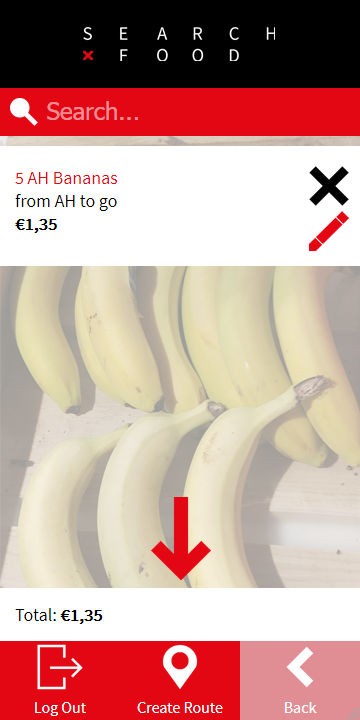

SearchFood
De opdracht
Voor deze opdracht moest ik een webapplicatie ontwerpen voor mobiel die een deel van de informatie in de gids ontsluit. Hierbij mochten we niet gebruik maken van Javascript. De gids heet de "International Student Guide Amsterdam" en is bedoelt voor internationale studenten die naar Amsterdam komen. Hiervoor heb ik uiteindelijk een protype website gemaakt die helpt om die studenten goedkoop eten te vinden bij supermarkten in de buurt.
Leerpunten
Ik heb tijdens dit vak mijn HTML en CSS vaardigheden verbeterd. Hieronder valt het responsive maken van een website.
 Github Page Github Repository